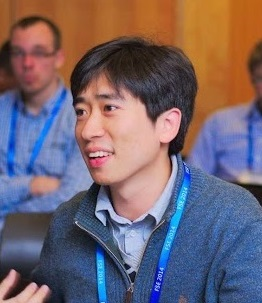

|  |
Shin HongAssistant ProfessorSchool of Computer Science and Electrical Engineering Handong Global University (HGU) hongshin@handong.edu |
[CV] [Google Scholar] [DBLP] |
I am lecturing in software engineering and problem solving with computational thinking in Sep to Dec 2017 (2017-2 semester).
Background
Research
113 Nehemiah Hall, Handong Global University,
558 Handong-ro, Buk-gu, Pohang, Gyeongbuk, South Korea (37554)
+82-54-260-1409